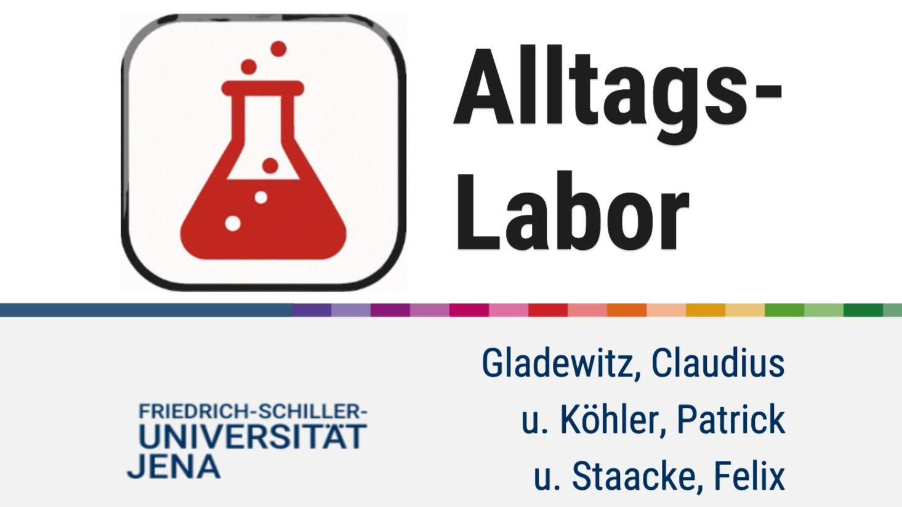

Alltagslabor
Sommersemester 2025
Dieses Projekt wird im Sommersemester 2025 von Felix Staacke und zwei Kommilitonen entwickelt und umgesetzt. Das fertige Programm ist die Prüfungsleistung für die Lehrveranstaltung "Digitales Lehren und Lernen in der Werkstattschule Jena" (Veranstaltungsnummer
219464) an der Friedrich-Schiller-Universität Jena.
Bewertung: 1,3
Link zum: GitLab-Repositorium
PythonHTMLCSSJavaScriptBatchFile